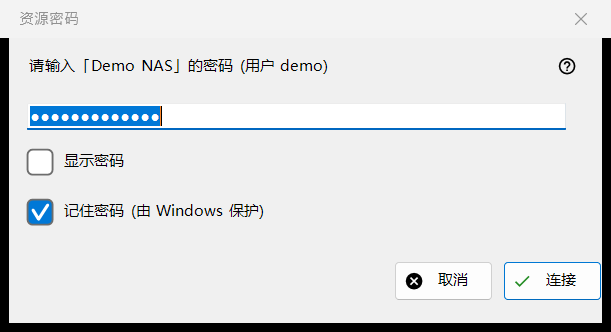
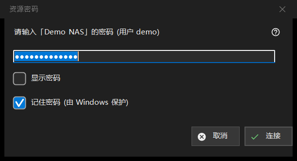

资源密码
用途说明
询问已保存的服务器或网络文件夹的密码。它会在你打开一个没有保存密码的资源、保存的密码被拒绝、服务器上的目标文件夹或导入需要密码时打开；对于受 PIN 保护的文件夹，标题为「资源 PIN」。


操作顺序
- 输入密码；它被遮盖显示，「显示密码」可将其显示出来。
- 决定是否保持勾选「记住密码 (由 Windows 保护)」。
- 点击「连接」（Enter），或点击「取消」（Esc）停止。
界面元素
密码
提示会写明资源名称和用户。密码按输入的原样使用，包括空格。字段为空时显示「请输入密码」。「显示密码」一开始是关闭的。
记住密码
该框默认勾选。勾选时，密码由 Windows 按你的账户加密保存，并且只在连接证明密码正确之后才保存；不勾选时，密码只在本次运行期间保存在内存中。在密码本来就会被保存的情况下（例如导入设置文件时）以及在 PIN 模式下，该框是隐藏的。
被拒绝的密码
如果服务器拒绝了上一次的密码，会出现一行「密码不正确。请重新输入。」，窗口会再次询问。
PIN 模式
对于受 PIN 保护的文件夹，标题为「资源 PIN」，提示要求输入所指资源的 PIN。没有记住框，PIN 被拒绝时显示「PIN 被拒绝。请重新输入。」